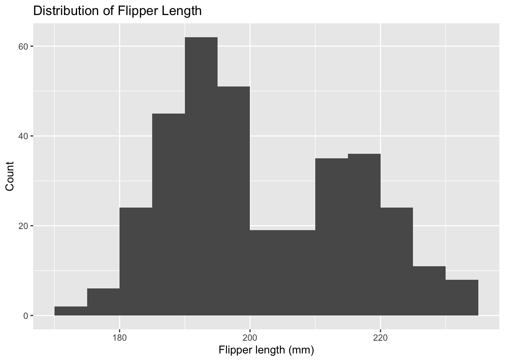

Lab 5: Correlations and Visualizations
You’ll also want to reference this tutorial on ggplot.
Dataset
We’ll use the palmerpenguins dataset, which contains measurements for three penguin species (Adelie, Chinstrap, Gentoo) from the Palmer Archipelago, Antarctica. Key variables include:
species(factor: Adelie, Chinstrap, Gentoo)
island(factor)
bill_length_mm,bill_depth_mm
flipper_length_mm
body_mass_g
sex(male/female, with some missing)
We’ll focus on flipper length (in millimeters) as the outcome of interest and compare across species.
peng <- penguins
peng <- peng %>% filter(!is.na(flipper_length_mm)) # drop NAs in outcome when needed1. What is the sample average flipper length among Gentoo penguins?
# [Your Code Here]
tapply(peng$flipper_length_mm, peng$species, mean)## Adelie Chinstrap Gentoo
## 189.9536 195.8235 217.1870mean(peng$flipper_length_mm[peng$species == "Gentoo"])## [1] 217.1872. What is the sample average flipper length among Adelie penguins?
# [Your Code Here]3. What is the estimated difference in average flipper length of Gentoo vs Adelie? Is this effect Causal?
# [Your Code Here]
mean(peng$flipper_length_mm[peng$species == "Gentoo"]) - mean(peng$flipper_length_mm[peng$species == "Adelie"]) %>%
abs()## [1] 27.233354. Visualize the distribution of flipper_length_mm.
About how many observations are near 200 mm (±5
mm)?
Tidyverse (ggplot2) histogram
# [Your Code Here]
ggplot(data = peng, mapping = aes(x = flipper_length_mm)) +
geom_histogram(binwidth = 10)
Base R histogram
# hist(peng$flipper_length_mm, breaks = seq(floor(min(peng$flipper_length_mm, na.rm = TRUE)),
# ceiling(max(peng$flipper_length_mm, na.rm = TRUE)), by = 5),
# main = "Distribution of Flipper Length (base R)",
# xlab = "Flipper length (mm)")Count near 200 mm
peng %>% filter(abs(flipper_length_mm - 200) < 5) %>%
nrow()## [1] 535. Explore the relationship between flipper_length_mm
and body_mass_g. Does it look positive or negative?
Tidyverse (ggplot2) scatter with trend
ggplot(peng, aes(x = flipper_length_mm, y = body_mass_g)) +
geom_point() +
geom_smooth(method = "lm")
ggplot(peng, aes(y = flipper_length_mm, x = body_mass_g)) +
geom_point() +
geom_smooth(method = "lm")
Base R scatter with fitted line
plot(peng$flipper_length_mm, peng$body_mass_g)
6. Compute the correlation between flipper_length_mm
and body_mass_g.
cor(peng$flipper_length_mm, peng$body_mass_g)## [1] 0.8712018(a) Are you surprised by the sign? (b) Are you surprised by the absolute value (magnitude)?